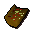
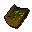
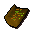
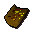
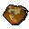
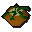
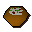
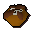

Gianne's Restaurant
Inventory config
giannerestaurantRun by  Gnome Waiter. Open in knowledge graph →
Gnome Waiter. Open in knowledge graph →
Located in: Grand Tree
Stock
| Item | Stock | Value | Sells for |
|---|---|---|---|
 Vegetable batta | 3 | 120 gp | 120 gp |
| 3 | 120 gp | 120 gp | |
 Toad batta | 3 | 120 gp | 120 gp |
 Fruit batta | 3 | 120 gp | 120 gp |
 Cheese+tom batta | 3 | 120 gp | 120 gp |
 Worm hole | 3 | 150 gp | 150 gp |
 Tangled toad's legs | 3 | 160 gp | 160 gp |
 Veg ball | 3 | 150 gp | 150 gp |
 Chocolate bomb | 3 | 160 gp | 160 gp |
| 3 | 85 gp | 85 gp | |
| 3 | 85 gp | 85 gp | |
| 3 | 85 gp | 85 gp | |
| 3 | 85 gp | 85 gp |
Shop sells at 100.0% of item value and buys at 25.0%.